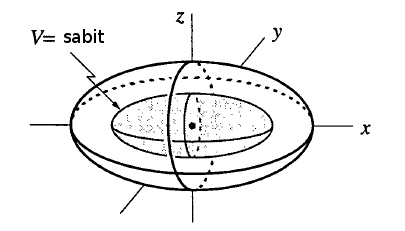
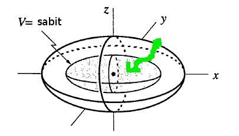
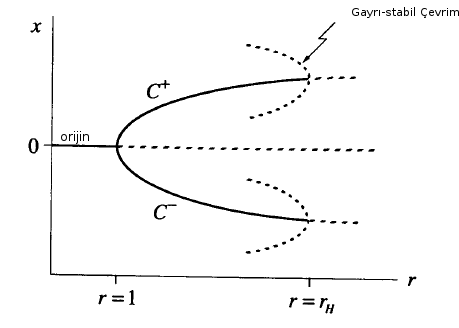
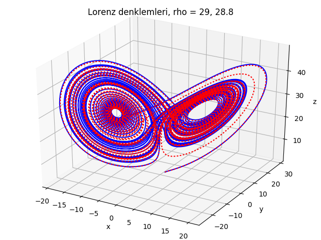
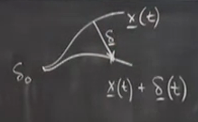
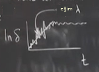

Önceki derste Lorenz sisteminin bulunması kolay özelliklerinden bahsettik, bu derste biraz daha çetrefil olanlarını, ve özellikle kaos çıkma olasılığını inceleyeceğiz. Hatırlarsak Rayleigh parametresi \(r < 1\) ise iddia etmiştim ki tüm gidiş yolları sonuşurda (asymptotically) orijine yaklaşır. Bu iddiayı ispatlayacak tekniğimiz yoktu, bu derste global sonuçlara erişmek için bir teknik göstereceğim.
Eğer sönüm yeterince büyükse \(t \to \infty\) iken tüm gidiş yolları orijine yaklaşır, orijinin “global olarak stabil’’ olduğunu söyleyebiliriz. Global stabilliğin tersi yerel stabillik, bunu lineerizasyon üzerinden \(r < 1\) için önceki derste görmüştük. Orijin global olarak stabil ise o zaman her şey orijine gidiyor demektir, stabil limit çevrimlerine, kaosa gitmiyorlar, başka hiçbir çekici yok.
İspat nasıl olacak? İspatın taslağı şöyle; önce bir \(V(x,y,z) = \frac{1}{\sigma} x^2 + y^2 + z^2\) tanımla. Peki bu fonksiyonu nereden buldum, çok bariz değil. Bu tür fonksiyonları bulmak biraz sanat işidir bu arada, onlara Lyapunov fonksiyonu deniyor. Lyapunov fonksiyonlarını içinde sürtünme, sönüm, yitirgenlik olan bir sistemdeki enerji fonksiyonlarına benzetebiliriz. Klasik bir mekanik sistemdeki toplam enerjiyi yazarız mesela, ama sürtünme vardır, ve enerji tekdüze (monotonic) şekilde azalmaya başlar. \(V\)’nin böyle bir fonksiyon olmasını istiyoruz, zaman geçtikçe tekdüze şekilde azalmalı, ve bu azalış sayesinde \(x,y,z\)’nin orijine yaklaşması gerektiğini ispatlayacağız.
Geometrik açıdan bakalım olaya; \(V\) neredeyse standart bir hesap olan karelerin toplamına benziyor, $ x^2 + y^2 + z^2$ neredeyse, tek fark başta \(1/\sigma\) var. Eğer \(1/\sigma\) formülde olmasaydı her sabit \(V\) için bu formül bir küre tanımlıyor olurdu. Ama \(1/\sigma\) formülde olduğu için \(V\)’nin kesit seviyeleri (level set) elipsoid, daha doğrusu farklı \(V\)’ler için elimizde eşmerkezli elipsoidler var. Taslaksak olarak çizelim,

Göstereceğiz ki herhangi bir elipsoid üzerindeki \(V\) değerinden başlanınca (altta başlangıç yeşil noktası) zaman geçtikçe daha da ufak \(V\) değerlerine gidiliyor, ve sonuç olarak orijine yaklaşılıyor.

Soru
Kesit seviyesi ne demektir?
Cevap
\(V\)’nin sabite eşit olduğu durum, bazen kontur ismi de veriliyor.
Soru
Neyin orijine gittiğini anlamadım, gidiş yolları mı, elipsoid’ler mi?
Cevap
Orijine giden \(x,y,z\). \(V\) üzerinden tanımladığımız elipsoidler bir yere gitmiyor, onlar bize yardımcı bir araç sadece, onun sayesinde orijine gidişi “şu anda hangi \(V\), hangi elipsoid içindeyiz’’ sorusuna çevirmiş olduk.
Devam edelim, fikir şu: \(\frac{\mathrm{d} V}{\mathrm{d} t}\)’yi, yani değişim hızını hesapla, ve bu hızın sıfırdan küçük olduğunu göster, eğer \(r < 1\) ise (bu faraziyeye ihtiyacımız olacak), ve orijinde değilsek. Orijinde olmamamız önemli çünkü eğer tam orijin üzerindeysek, hatırlarsak orijin bir sabit nokta, ve sabit noktada \(V\) azalmaz, orada \(\frac{\mathrm{d} V}{\mathrm{d} t}=0\) olur.
Şimdi \(\frac{\mathrm{d} V}{\mathrm{d} t}\)’yi hesaplayalım, \(V\)’yi üsteki gibi niye seçtiğimizi şimdi daha iyi anlayacağız belki, çünkü türevi alırken tanımladığımız \(V\)’nin faydalı olacak özellikleri var. Bir de \(\frac{1}{2} \frac{\mathrm{d} V}{\mathrm{d} t}\)’yi hesaplayalım çünkü \(V\) içindeki kareler türev sonrası aşağı inip katsayı 2 haline gelecek, onları iptal etmek için \(1/2\) ile baştan çarpalım.
\[ \frac{1}{2} \frac{\mathrm{d} V}{\mathrm{d} t} = \frac{x\dot{x}}{\sigma} + y\dot{y} + z\dot{z} \]
Niye ilk terimde \(\frac{x\dot{x}}{\sigma}\) elde ettik? Zincirleme Kanununu unutmayalım, \(t\)’ye göre türev alıyoruz, fakat \(x\), \(t\)’nin bir fonksiyonu, bu sebeple \(x^2\) türevi önce \(2x\) veriyor, sonra \(x\)’in \(t\)’ye göre türevi \(\dot{x}\) ile çarpıyoruz. Şimdi Lorenz denklemlerine bakarak \(\dot{x},\dot{y},\dot{z}\)’nin değerlerini üstteki formüle sokalım. Lorenz denklemleri neydi?
\[ \dot{x} = \sigma (y - x)\]
\[ \dot{y} = rx - y - xz \]
\[ \dot{z} = xy - bz \]
Bu arada 1. formüldeki \(\sigma\)’ya dikkat, zaten bu sebeple Lyapunov fonksiyonuna bir \(\sigma\) koyduk ki şimdi yapacağımız yerine geçirme işleminden sonra \(\sigma\)’lar iptal olabilsin.
\[ = (yx - x^2) + (ryx - y^2 - xzy) + (zxy - bz^2) \]
İptal olabilecek bazı terimler var, mesela,
\[ = (yx - x^2) + (ryx - y^2 - \cancel{xzy}) + (\cancel{zxy} - bz^2) \]
\[ = (r+1)xy -x^2 -y^2 - bz^2 \]
Bu son ifadeye bakalım, onun kesinlikle negatif olacağından emin miyiz? Terim terim bakarken tam emin olamıyoruz, \(b,r\) pozitif, \(-bz^2\) sıfır ya da negatif, \(-x^2,-y^2\) aynı şekilde. Fakat \((r+1)xy\) terimi problem çıkartabilir gibi duruyor, eğer \(x,y\) aynı işarete sahipse o zaman bu terim pozitif olur. Yani ilk bakışta üstteki ifade “negatif kesin’’ gibi durmuyor (lineer cebirden terminoloji kullanmak gerekirse), fakat aslında öyle. Kareyi tamamlama (completing the square) işlemini uygulayınca bu açık bir şekilde görülecek.
\[ = - \bigg[ x - \frac{r+1}{2}y \bigg]^2 - \bigg( 1-\bigg(\frac{r+1}{2}\bigg)^2 \bigg)y^2 - bz^2 \]
Üstteki ifadeyi açınca iki üstteki ifadeyi elde ettiğimiz görülebilir. Bu son ifade gerçi daha arap saçı gibi duruyor ama bence onun negatif kesin olduğunu görmek daha kolay. İlk büyük terimde “negatif bir şeyin karesi’’ var, kare her zaman pozitif verir, onun negatifi her zaman negatif olur. İkinci büyük terimde \((\frac{r+1}{2})^2\)’ye bakalım, \(r < 1\) demiştik, o zaman bölünende 2’den küçük bir değer var, yani \(\frac{r+1}{2} < 1\) olacak, karesini alınca hala 1’den küçük, o değeri 1’den çıkartınca her zaman pozitif. Yani ikinci büyük terimde \(y^2\) önünde pozitif bir değer var, çünkü \(r<1\). O zaman ilk büyük terimde negatif, ikinci büyük terimde pozitif bir şeyin negatifi çarpı pozitif \(y^2\), ve üçüncü terimde \(-b\) her zaman negatif, çarpı \(z^2\) her zaman pozitif, yani üçüncü terim de negatif. O zaman üstteki hesap her zaman \(\le 0\).
Pekala, \(\frac{1}{2} \frac{\mathrm{d} V}{\mathrm{d} t}\)’in pozitif olmadığını gösterdik. Peki sıfır olabilir mi? Düşünelim, negatifi alınmış bir şeylerin karesinin toplamının sıfır olabilmesi için o toplamdaki (negatif olan) her terimin ayrı ayrı sıfır olması gerekir. Değil mi? Biri pozitif biri negatif olsaydı o zaman biri bir diğerine götürür vs. gibi şeylerle ilgilenmemiz gerekecekti, ama tüm terimlerin negatif olduğunu biliyoruz, o zaman sıfıra eşitlik için hepsinin ayrı ayrı sıfır olması gerekir. Bakıyoruz \(y^2,z^2\)’nin katsayıları sıfır olması mümkün değil, o zaman bu terimlerde sıfırlık için \(y,z\)’nin sıfır olması gerekir. Aynı şekilde birinci terimde \(x,y\) sıfır olmalı. Demek ki üstteki ifadenin sıfır olması için tüm \(x,y,z\) değişkenleri sıfır olmalı, bu orijinde olunduğu durum.
Baştaki iddiamıza dönelim, eğer orijinde değilsek, \(r<1\) ise \(\frac{1}{2} \frac{\mathrm{d} V}{\mathrm{d} t}\) kesin negatif, yani ardı ardına gelen elipsoidlerin hepsi birbirinden küçük. O zaman, \(V\)’nin alt sınırı sıfır olduğuna göre, ve \(V\) tekdüze şekilde azaldığı için \(V(x(t),y(t),z(t)) \to 0\) olmalıdır. \(V\)’nin sıfır olduğu tek nokta da \(x,y,z\) sıfır olduğu noktada olduğu için \(t \to \infty\) iken gidiş yolu orijine gidiyor demektir.
Soru
Bu Lyapunov fonksiyonunu nasıl buldunuz?
Cevap
Bu işin sanat kısmı işte, aynen Dulac yöntemindeki \(g\)’yi bulmak gibi. Uygulamalı Matematikte halen pek çok çözülmemiş problem var, çünkü onlar için hala düzgün bir Lyapunov fonksiyonu bulunamadı. Mesela türbülansta boruda akışı düşünürsek, belli bir Reynolds sayısının, mesela 800 gibi, altında tek stabil çözümün yaprak tipi (laminar) çözüm olduğu düşünülüyor. Yani sistemde yaprak tipi olan global bir çekici var, ama hala kimse bunu kesin olarak ispatlayamadı. Kabaca bunun doğru olduğunu biliyoruz, ama o Lyapunov fonksiyonunu bulamadığımız için kesin ispatı yapamıyoruz.
Devam edelim, şu \(r < 1\) olan sıkıcı alandan çıkalım artık, \(r > 1\) olunca ne oluyor ona bakalım. Önceki derste \(r>1\) olunca orijinde bir eğer var demiştik, ayrıca iki yeni sabit noktayı bulmuştuk, onlara \(C^-\) ve \(C^+\) ismi vermiştik. Bu iki yeni sabit nokta \(r=1\) olduğunda orijinde ortaya çıkıyordu, bu noktalar su çarkının herhangi bir yönde kalıcı dönüşüne tekabül ediyordu, ya da bu modelin temsil ettiği taşınım hücresinin varlığına.
Bu konumlar stabil mi? Evet, en azından ilk başta. Bunun hesabını size ödev olarak veriyorum. Ödevde onların lineersel olarak stabil olduğunu bulacaksınız, bu sonuca özdeğerleri hesaplayarak varmak gerekiyor, ya da bu üç boyutlu sistemde o özdeğerler için belli koşullar hesaplayarak.. Neyse bu noktaların \(1 < r < r_{hopf}\) için lineersel stabil olduğunu bulacaksınız, ki \(r_{hopf} = \sigma(\frac{\sigma+b+3}{\sigma-b-1})\). Hopf ismini kullandım çünkü göreceğiz ki bu sayıda bir Hopf çatallaşması ortaya çıkıyor. Bu sonucu türetirken ayrıca bölenin pozitif olduğunu farz etmeniz gerekiyor yani \(\sigma > b + 1\). Lorenz’in makalesini hatırlarsak \(\sigma=10,b=8/3\). \(r_{hopf}\)’in aşağı yukarı \(24.74\) çıkması lazım, yani 1 ile bu değer arasında bu noktanın sabit olduğu oldukça büyük bir bölge var.
Peki \(r > r_{hopf}\) olduğu zaman ne olacak? Bu Hopf’in ne tür olduğuna bağlı. Hopf çatallaşmasında bir limit çevrimi yaratılır ama bu stabil bir çevrim midir, ki bu durumda Hopf süperkritiktir, yoksa gayrı-stabil midir ki bu durumda çevrim \(r_{hopf}\) altında oradaydı ve gayrı-stabil durumdaydı? Bir tahmininiz var mı?
Bir tahmine göre \(C^-,C^+\) çevresinde ufak, stabil birer limit çevrimi var, iki tane çünkü hatırlarsak çözümler simetrik çift halinde geliyor - fakat bu tahmin doğru değil, standart Lorenz parametre değerleri için çatallaşma altkritik (subcritical). Hatırlarsak altkritik tehlikeli bir şey, 13. derste bunu anlatırken uçak kanatlarından bahsetmiştim, kollarımı filan sallamıştım, tehlikeli çünkü yakında hiçbir çekici yok. Tahmin bir yana, hesabın kendisi aslında zor bir hesap. Uzun yıllar bu alanda çalışanlar burada alt mı süper mi kritiklik olduğundan emin değildi, elde bir ispat yoktu, ta ki Marsden ve McCracken tarafından ispat yapılana kadar [2].
Altkritiklik mevcudiyet ne demek? Ortada bir altkritik çatallaşma olduğuna göre gidiş yolları uzaktaki bir çekiciye atlayacak demektir. Bu çatallaşmayı tehlikeli yapan da bu zaten, kesintisiz, sürekli olmayan bir davranış var ortada. Bizim örneğimizde bu zıplayış \(C^-,C^+\) çekicileri dışında bir şey olacak. Bu şey nedir?
Hatırlarsak imkansızları eleyen ve geriye kalan, her ne kadar olası olmasa da, doğru cevaptır diyen Sherlock Holmes felsefesini takip ediyoruz, burada şimdiye kadar elediklerimiz neler?

\(r=1\)’de çatallaşma oluyor demiştik, sonra gidiyor gidiyoruz, ta ki \(r_{hopf}\)’a (resimde \(r_H\)) gelinceye kadar, bu noktada ispat etmeden iddia etmiştim ki burada altkritik Hopf çatallaşmaları var, yani o noktada geriye doğru bükülen gayrı-stabil çevrimler var. Onları da resimde göstermeye uğraştık. Bu arada, o geriye doğru bükülen kapların gidip gidip orijine gittiğini hayal edenler olabilir, ve bu hakikaten oluyor, standart Lorenz parametreleri çevresindeki bazı değerler için yanlış hatırlamıyorsam, 13 ya da 14 etrafında, o gayrı-stabil çevrimler o kadar büyüyor ki uçları bir homoklinik çatallaşma üzerinden orijine dokunuyor. Bu olduğunda “çanak-çömlek patlıyor’’, her şey alt-üst oluyor, bazıları bu hale homoklinik patlama ismi veriyor, çok yanlış bir isim değil. Lorenz sistemi hakkında bir kitap yazıldı [3], orada yazar bu durumdan detayıyla bahsediyor. Lorenz’in kendisi bu durumu bilmiyordu, yeni keşfedilen bir şey, ama o da \(r\)’yi büyüttükçe ve \(r_{hopf}\) sonrası her şeyin gayrı-stabil olduğunu görüyordu. \(C^-,C^+\), orijin, herşey gayrı-stabilliğe gidiyor.
Peki gidiş yolları nasıl davranır bu durumda? Belki sonsuzluğa kaçtılar! Tüm sistem o kadar gayrı-stabil durumda ki belki aşırı büyüdüler / patladılar. Aslında bu mümkün değil, bu başka bir ödevin konusu (çok zor değil). Gidiş yolları sonsuza gider mi? Hayır. İspat için büyük bir küre tasarlarsınız ki öyle ki onun dışındaki tüm gidiş yolları küreye doğru gitmeli, ve içine girmeli, ve hiç dışarı çıkamamalı. Yani ortada bir kapan bölgesi (trapping region) var. Her şey nihayetinde bir büyük küre içinde yakalanıyor. Lorenz de bu ispatı makalesinde yapmıştı.
O zaman sonsuza gidiş yok, etrafta hiç çekici yok. Bir diğer ihtimal ne olabilir? Bir stabil limit çevrimi mi? İlla \(C^-\), ya da \(C^+\)’dan çatallaşmış olması gerekmez, belki hiç yoktan ortaya çıkan bir stabil limit çevrimi var, çevrimlerin eğri düğüm çatallaşması durumunda olduğu gibi..? Bu kavisli bir soru. Lorenz makalesinde öne sürdüğü sistemde stabil limit çevrimi olmadığını iddia etti, kullandığı argümanı sonra işleyeceğiz, ama argüman inandırıcı idi.
Ne kaldı? Stabil limit çevrimi yok, ama belki sonuşurda bir değişmez (invariant) torusa yaklaşıyoruz? Torus üzerinde periyotalımsı bir hareket var, periyotalımsılıktan bahsetmiştik. Fakat bu da imkansız, bu argüman oldukca basit. Değişmez torus derken bir kez o torusta başlayınca onun üzerinde kalıyorsunuz demek istiyorum. Bu mümkün değil çünkü eğer ortada bir değişmez torus var ise bu torusun hacmini düşünelim. Burada katı / som (solid) bir iç torus var, dış yüzey değişmez dedik, o zaman içteki hacim de değişmez olacaktır. Ve bu mümkün değil çünkü biliyoruz ki Lorenz sistemindeki herhangi bir bölge üstel bir şekilde küçülüyor. O zaman değişmez bir torus olamaz çünkü bu küçülen bölge durumunu ihlal eder.
Bu noktada bildiğimiz her şeyi eledik. Lorenz de bu noktaya geldi, ve sonra differansiyel denklemleri sayısal entegre ederek [yani sistemi simüle ederek] neler olduğunu anlamaya uğraştı. Simülasyonu şurada görebilirsiniz [4]. Video Lorenz’in ünlü bir başlangıç şartında noktadan sonra birkaç sayıyı attıktan sonra sistemin tamamen farklı şekilde davrandığı durumu gösteriyor, ki kaosun “başlangıç şartlarına hassas bağımlılığı’’ burada görülebiliyor.
Lorenz ODE Denklemlerinin Sayısal Olarak Çözümü [1]
import numpy as np
from scipy.integrate import odeint
def rhs(u,t,beta,rho,sigma):
x,y,z = u
return [sigma*(y-x), rho*x-y-x*z, x*y-beta*z]
sigma=10.0
beta=8.0/3.0
rho1=29.0
rho2=28.8
u01=[1.0,1.0,1.0]
u02=[1.0,1.0,1.0]
t=np.linspace(0.0,50.0,10001)
u1=odeint(rhs,u01,t,args=(beta,rho1,sigma))
u2=odeint(rhs,u02,t,args=(beta,rho2,sigma))
x1,y1,z1=u1[:, 0],u1[:, 1],u1[:, 2]
x2,y2,z2=u2[:, 0],u2[:, 1],u2[:, 2]
import matplotlib.pyplot as plt
from mpl_toolkits.mplot3d import Axes3D
fig=plt.figure()
ax=Axes3D(fig)
ax.plot(x1,y1,z1,'b-')
ax.plot(x2,y2,z2,'r:')
ax.set_xlabel('x')
ax.set_ylabel('y')
ax.set_zlabel('z')
ax.set_title('Lorenz denklemleri, rho = %g, %g' % (rho1,rho2))
plt.savefig('17_01.png')
Soru
Lorenz modelini niye / nasıl keşfetti?
Cevap
1960’lı yıllarda bilim çevrelerinde ciddi bir tartışma vardı, hava tahmini nasıl yapılır? Üç metot öne sürülmüştü, biri örüntü / kalıp tanıma (pattern matching) ile. Dün sıcaklık 20 derece ise, tarihte 20 derece olan diğer günleri bul, bu günlerden ertesi günde ne olduğunu raporla. Basitleştiriyorum ama, aşağı yukarı fikir bu. İkinci yöntem lineer regresyon ile, komşu eyaletlerin, dün, önceki gün, vs. değişkenlerini al, o yer ile bir regresyona sok, katsayı değerlerini hesapla, sonra o katsayılar ile yeni bir gün, yer için tahmin üret.
Üçüncüsü pür fiziksel olarak olaya yaklaşmak, sıvı akışını biliyoruz, termodinamik kanunlarını biliyoruz, bu yöntemleri havaya uygula, basınca bak, kısmi differansiyel denklemleri bul, sayısal entegrasyon ile ne olacağını hesapla. Üçüncü yöntemin problemi o günkü bilgisayarların hesap için yeterince kuvvetli olmaması idi.
Lorenz gördüğümüz gibi bir differansiyel denklem sistemi kullandı, ki bu üçüncü yöntem, fakat ilginç olan Lorenz aslında 1. ve 2. yöntemlerin hangisinin daha iyi olduğunu anlamak amacıyla iklim gibi davranan bir “suni iklim’’e ihtiyacı olduğu için denklemlerini yazdı. Çünkü o zaman bu iklimi istediği gibi / şekilde işletip testlerini onun üzerinde yapabilecekti. Bazıları Lorenz’in rasgele bu denklemleri bulduğunu söylüyor ama bu doğru değil. O bu denklemleri kasıtlı bir şekilde, deterministik ve tahmin edilmesi zor olacak şekilde seçti. Bir arkadaşına söylemiş, taşınımda o tür bir denklem olduğunu biliyormuş zaten, ama bu sistem 12 denklemli bir sistem, Lorenz onları azalta azalta özünü temsil eden 3 denkleme getiriyor, ve Lorenz denklemleri oradan geliyor; çünkü onun amacı deterministik ama periyotsal olmayan bir şey tasarlamak.
Lorenz Çekicisi

İki gidiş yolu düşünelim, aralarındaki fark başlangıçta çok az, \(\delta_0\) olsun. Zaman geçtikçe aralarında \(\delta\) vektörü kadar fark olsun. Resimde \(\underline{\delta}\)’yi vektörün büyüklüğünü temsil için kullandım. Lorenz çekicisi için \(t\) zaman sonrası fark sayısal deneylerde,
\[ \delta(t) \approx \delta_0 e^{\lambda t}\]
olarak bulunmuştur. Standart Lorenz parametreleri için \(\lambda = 0.9\) çıkacak (bu da sayısal deneylerle bulundu). Video’daki bilgisayar grafiğinde alttaki gibi bir şekil vardı hatırlarsak,

Bu grafik bol inişli çıkışlı bir grafik, benim iddiam eğer grafiği kabaca temsil eden bir çizgi çizersek o çizginin eğimi 0.9 olur. Bu net sayıyı çok ta ciddiye almaya gerek yok, ama bir pozitif \(\lambda\) olduğu bariz. Yani gidiş yolları üstel hızda birbirinde ayrılıyor. Sonra ayrım bitiyor tabii [üstteki grafikteki düz bölge] çünkü gidiş yollarının çekicinin ölçeğinden daha fazla birbirlerinden ayrılması mümkün değil.
\(\lambda\) parametresi Lyapunov üsteli (exponent) denen bir kavramı temsil ediyor. Tabii \(n\) boyutlu bir sistem için \(n\) tane Lyapunov üsteli olur, bu sadece en büyüğü. İnsanlar bir Lyapunov üstelinden bahsederken aslında bunu kastediyorlar, en büyük olanını. Ama net bir zihinde canlandırma için gidiş yolunda bir nokta düşünelim, ve onun etrafında \(n\) boyutlu bir belirsizlik küresi düşünelim. Zaman geçtikçe o küre bir elipsoid’e dönüşür, ve bu elipsoid’in en büyük ekseni, yani en hızlı üstel ayrıma sebep olan eksen, \(e^{\lambda t}\) hızında büyüyen eksen olacaktır.
Bir sistemin pozitif Lyapunov üstele sahip olması kaosun işaretidir.
“Başlangıç şartlarına olan hassas bağlantı’’ demiştik, başlangıçta yapılan ufak değişiklikler zaman geçtikçe üstel hızda değişime sebep oluyordu. Bunu söylemek sistemin pozitif Lyapunov üsteline sahip olduğunu söylemek ile aynı şey.
Bunun tahmin için önemi ne? Diyelim ki bir tolerans \(a\) sonrası sistemizi tahmin edilemez kabul ediyoruz, yani \(\delta > a\) olduğu durum. O zaman \(\delta_0 e^{\lambda t} = a\)’yi çözmek (\(t\)’yi bulmak için) bize temel kavramsal bir formül sunmuş oluyor.
\[ t \approx \frac{1}{\lambda} \ln \bigg( \frac{a}{\delta_0}\bigg) \]
\(t\) tahminlerin işleyeceği zaman noktası, ondan sonra tahmin mümkün değil, ona “tahmin ufku (predictability horizon)’’ diyelim, ya da Lyapunov zamanı. Bu zamanın \(1/\lambda\) derecesinde olduğuna dikkat. Mesela güneş sisteminin \(1/\lambda\)’sı 5 milyon yıl [gezegen hareketleri oldukca tahmin edilir, ama zaman ölçeğini doğru seçince orada bile kaos var]. Ama şimdi”bir dakika formülde logaritma var’’ diye düşünenler olabilir. Uygulamalı Matematiğin iyi bilinen kulağa küpe kurallarından biri logaritmaların derecesi 1 civarı olması. Bir sayının logarıtma üzerinden etki yaratması için çok büyük olması gerekir, mesela Avagadro’nun sayısı, 10 üzeri 23 değil mi, bu dehşet büyük bir sayı. Fakat bu sayının log’unu alınca sadece 23 olur, ki o sayıda 1’den çok büyük sayılmaz.
Yani birisi diyebilir ki “bu kabul edilemez, havayı \(1/\lambda\)’ya oranlı değil, \(10 \lambda\)’ya oranlı tahmin edebilmek istiyoruz’’, yani şu an [mesela] yaptığımız tahminin 10 katına çıkmak istiyoruz. Formül diyor ki o hedefe erişmek için \(\delta_0\)’yı müthiş ufaltmak lazım. Ne kadar? \(10^{10}\) kadar! Başlangıç şartlarına olan hassas bağlantı bu işte. Kaotik sistemlerde başlangıç ölçümlerinde aşırı ilerleme yapmadan tahmin ufkunu büyütmek çok zor.
Kaynaklar
[1] Saha, 42 Problems in Scientific Computing, http://www.physik.uzh.ch/~psaha/teach/42probs.pdf
[2] Marsden, The Hopf Bifurcation and Its Applications
[3] Sparrow, The Lorenz Equations: ifurcations, Chaos, and Strange Attractors
[4] Strogatz, Lecture, https://youtu.be/gscKcPAm-H0?t=2529